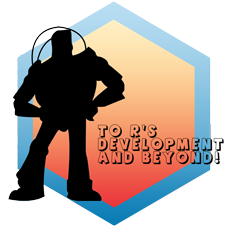

Functions and processes for R development and beyond!
Useful links:
Maintainer: Ob7 - Observatory of Exploited Tropical Pelagic Ecosystems ob7@ird.fr
Authors:
Mathieu Depetris mathieu.depetris@ird.fr
Other contributors:
Antoine Duparc antoine.duparc@ird.fr [contributor]
Norbert Billet norbert.billet@ifremer.fr [contributor]